Lecture 3: Regularization and Optimization¶
参考：Stanford CS231n 10th Anniversary, Lecture 3, April 8, 2025
回顾：损失函数¶
在上一讲中，我们建立了线性分类器的基本框架：
- 得分函数 (Score Function)：\(s = f(x; W) = Wx\)
- 损失函数 (Loss Function)：衡量预测与真实标签之间的差距
给定数据集 \(\{(x_i, y_i)\}_{i=1}^N\)，总损失为各样本损失的平均：
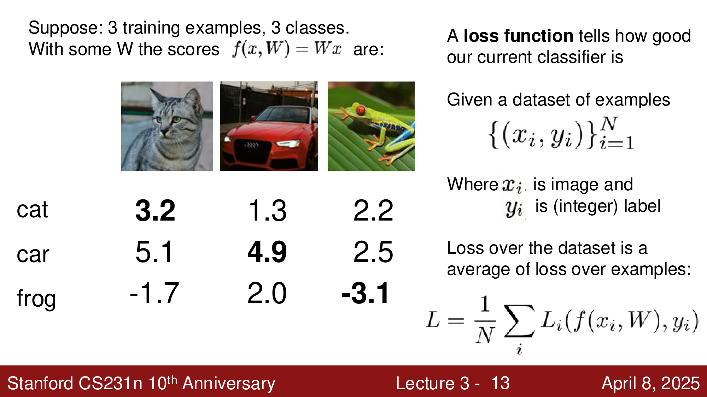
正则化 (Regularization)¶
为什么需要正则化？¶
仅靠数据损失来训练模型存在一个根本问题：模型可能会 过拟合 (overfit) 训练数据——在训练集上表现完美，但在新数据上表现很差。
正则化的完整损失函数：
- 第一项是 数据损失 (Data Loss)：模型预测应当匹配训练数据
- 第二项是 正则化损失 (Regularization Loss)：阻止模型在训练数据上拟合得 太好
\(\lambda\) 是 正则化强度（超参数），控制两项之间的权衡。
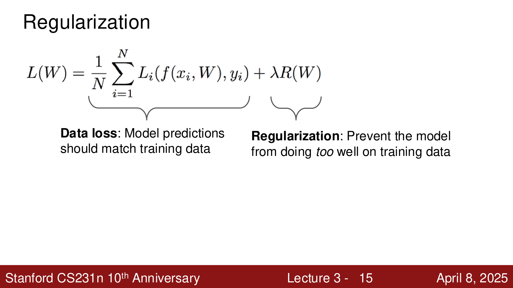
正则化的直觉¶
考虑一个简单的回归问题。给定训练数据点，有两种拟合方式：
- \(f_1\)：一条复杂的高次曲线，完美穿过每一个训练点
- \(f_2\)：一条简单的直线，大致拟合趋势但不完美
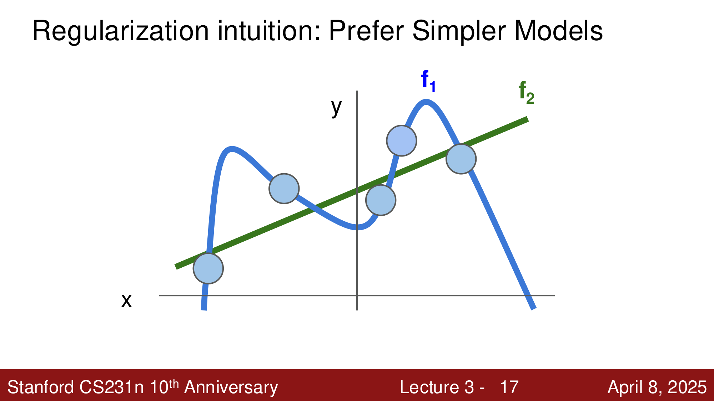
当出现新的测试数据时，\(f_2\)（简单模型）通常表现更好，因为它没有拟合训练数据中的噪声。这就是 奥卡姆剃刀 (Occam's Razor) 的思想：在多个能解释数据的假说中，最简单的那个往往是最好的。
常见的正则化方法¶
简单形式：
- L2 正则化：\(R(W) = \sum_k \sum_l W_{k,l}^2\)
- L1 正则化：\(R(W) = \sum_k \sum_l |W_{k,l}|\)
- Elastic Net (L1 + L2)：\(R(W) = \sum_k \sum_l \beta W_{k,l}^2 + |W_{k,l}|\)
更复杂的形式：Dropout、Batch Normalization、Stochastic Depth 等（后续课程讨论）。
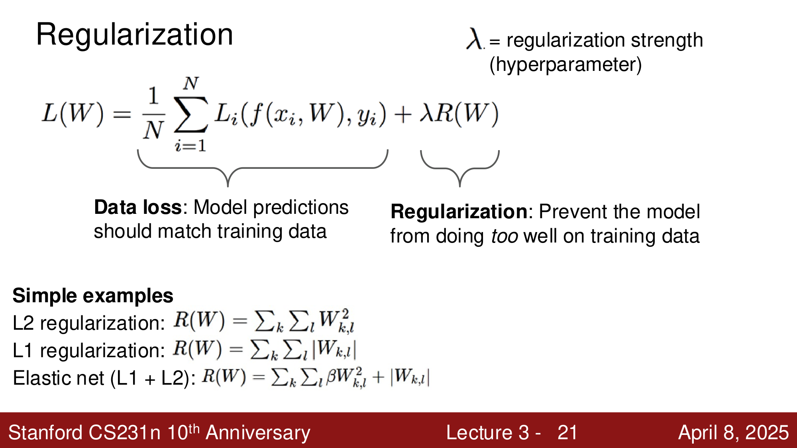
为什么正则化有效？¶
- 表达对权重的偏好：引导模型选择特定形式的权重
- 使模型更简单：提高泛化能力
- 改善优化：为损失函数增加曲率
L2 正则化的偏好¶
考虑输入 \(x = [1, 1, 1, 1]\)，两组权重：
- \(w_1 = [1, 0, 0, 0]\)
- \(w_2 = [0.25, 0.25, 0.25, 0.25]\)
两者的预测结果相同：\(w_1^T x = w_2^T x = 1\)
但 L2 正则化值不同：
- \(R(w_1) = 1^2 + 0 + 0 + 0 = 1\)
- \(R(w_2) = 4 \times 0.25^2 = 0.25\)
L2 正则化偏好 \(w_2\)，因为它将权重 分散 到所有维度上，让模型更多地依赖所有输入特征，而非仅依赖某一个特征。
相反，L1 正则化偏好 \(w_1\)（稀疏权重），因为 \(|w_1|_1 = 1 < |w_2|_1 = 1\)... 实际上这个例子中 L1 范数相同，但通常 L1 会推动权重变为稀疏（许多值为 0）。
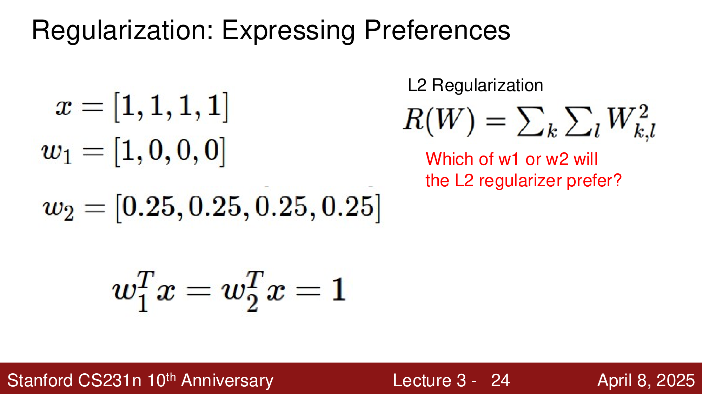
回顾：完整框架¶
到目前为止我们有：
- 数据集：\((x, y)\) 对
- 得分函数：\(s = f(x; W) = Wx\)
- 损失函数：如 Softmax（交叉熵）\(L_i = -\log\left(\frac{e^{s_{y_i}}}{\sum_j e^{s_j}}\right)\)
- 完整损失：\(L = \frac{1}{N}\sum_{i=1}^N L_i + R(W)\)
核心问题：如何找到最优的 \(W\)？这就是 优化 (Optimization) 的任务。
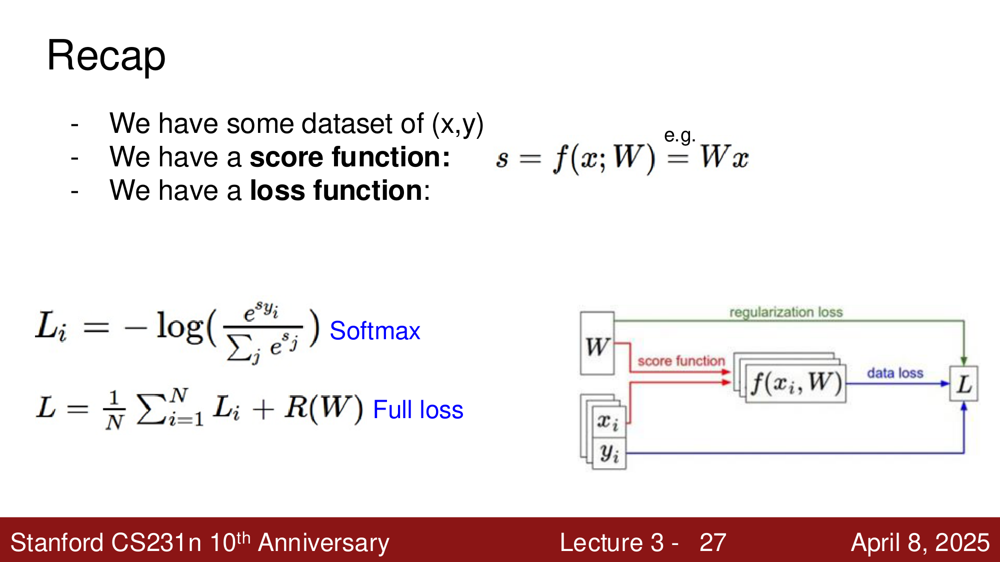
优化 (Optimization)¶
策略 #1：随机搜索（非常差的方法）¶
随机生成大量权重矩阵 \(W\)，评估损失，保留最好的一个。
在 CIFAR-10 上只能达到约 15.5% 的准确率（随机猜测是 10%，SOTA 约 99.7%）。这显然不是一个好方法。
策略 #2：沿着斜坡走下去¶
想象站在山上，想走到最低的山谷——应该沿着 最陡 的方向走下去。在数学中，这就是 梯度下降 (Gradient Descent)。
梯度 (Gradient)¶
在一维中，函数的导数定义为：
在多维中，梯度 (Gradient) 是偏导数组成的向量：
- 任意方向的斜率 = 该方向与梯度的 点积
- 最速下降方向 就是 负梯度方向
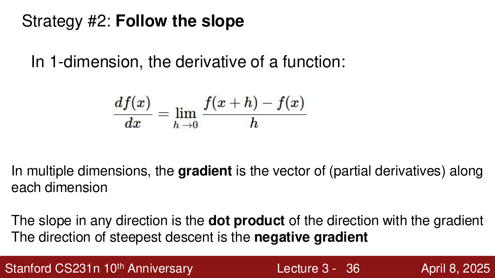
数值梯度 vs 解析梯度¶
数值梯度 (Numerical Gradient)：
对每个维度，逐一微扰 \(W\) 的某个分量，计算损失变化：
- 优点：容易实现
- 缺点：非常慢（需要对每个参数都做一次前向传播），且只是近似值
解析梯度 (Analytic Gradient)：
利用微积分直接推导出梯度的封闭形式表达式。
- 优点：精确、快速
- 缺点：容易写错
实践中：始终使用解析梯度，但用数值梯度来验证实现的正确性。这称为 梯度检查 (Gradient Check)。
梯度下降 (Gradient Descent)¶
有了梯度，优化过程非常简单：反复沿负梯度方向更新权重。
其中 \(\alpha\) 是 学习率 (Learning Rate)，控制每步走多远。
# Vanilla Gradient Descent
while True:
weights_grad = evaluate_gradient(loss_fun, data, weights)
weights += - step_size * weights_grad # perform parameter update
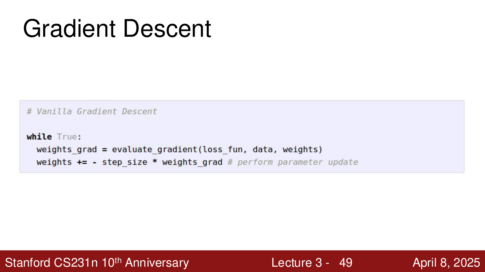
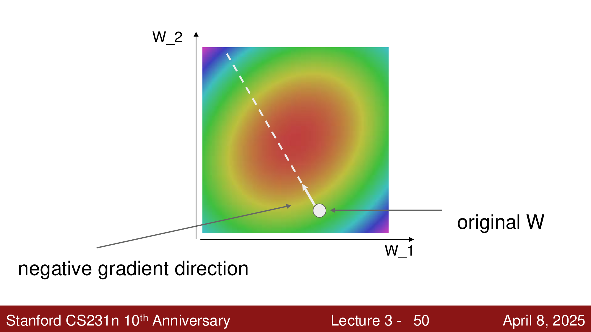
随机梯度下降 (Stochastic Gradient Descent, SGD)¶
当数据集很大时（如 \(N\) 为百万级别），计算全部样本的梯度非常昂贵。SGD 的核心思想是用一个 小批量 (minibatch) 的样本来近似全体梯度：
每次随机采样一小批样本（通常 32 / 64 / 128 个）来估计梯度。
# Vanilla Minibatch Gradient Descent
while True:
data_batch = sample_training_data(data, 256) # sample 256 examples
weights_grad = evaluate_gradient(loss_fun, data_batch, weights)
weights += - step_size * weights_grad # perform parameter update
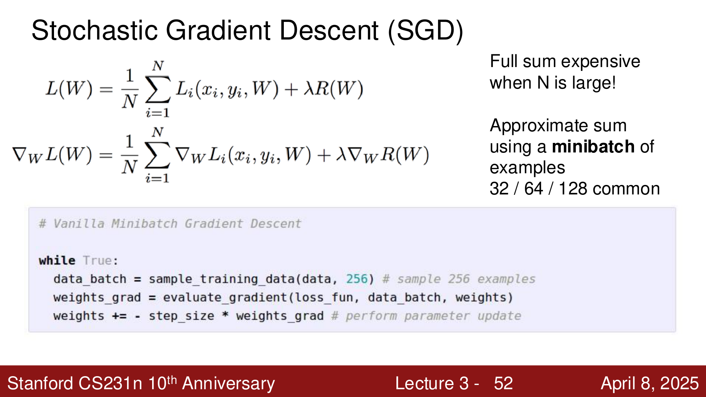
SGD 的问题与改进¶
问题 #1：病态条件 (Poor Conditioning)¶
当损失函数在某些方向上变化很快、在另一些方向上变化很慢时（即 Hessian 矩阵的 条件数 很大），SGD 会在陡峭方向上来回振荡，而在平坦方向上进展缓慢。
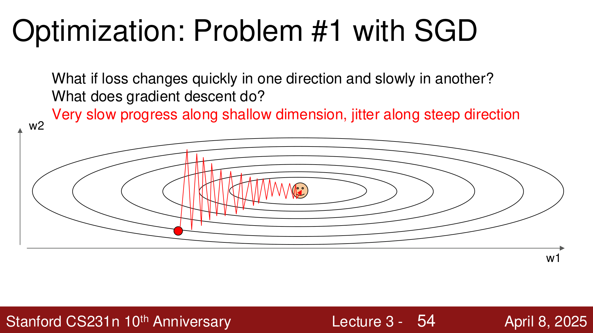
问题 #2：局部极小值和鞍点¶
- 局部极小值 (Local Minima)：梯度为零，SGD 会卡住
- 鞍点 (Saddle Point)：某些方向上是极小、某些方向上是极大，梯度也为零
在高维空间中，鞍点比局部极小值更常见。
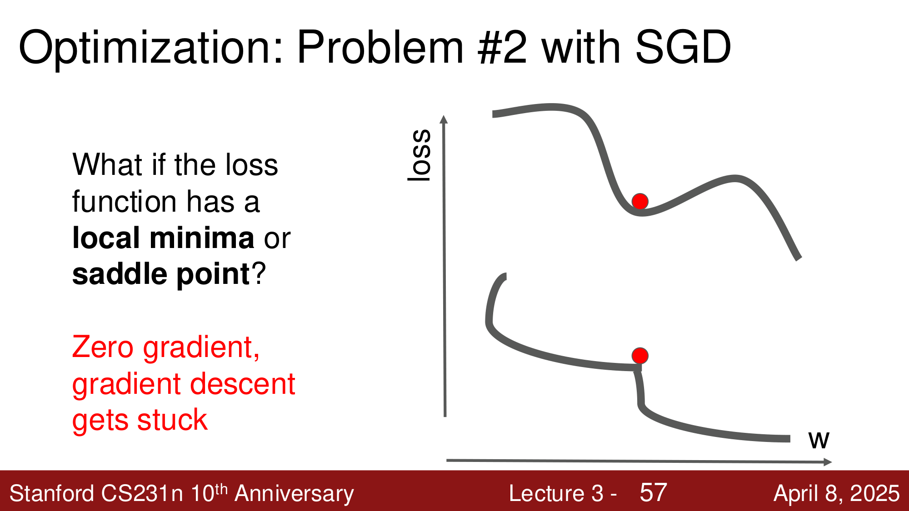
鞍点的直观理解：考虑 \(f(x, y) = x^2 - y^2\)，在原点处 \(\frac{\partial f}{\partial x} = 2x = 0\)，\(\frac{\partial f}{\partial y} = -2y = 0\)，梯度为零，但该点既不是极大值也不是极小值。
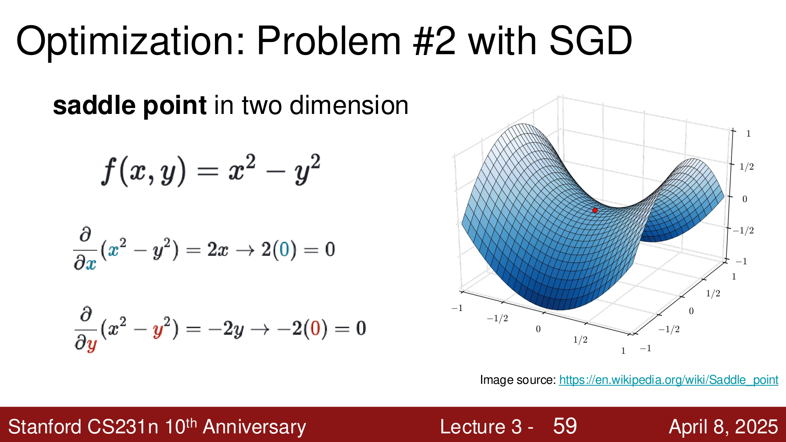
问题 #3：梯度噪声¶
由于 SGD 使用 minibatch 近似梯度，估计的梯度本身带有噪声，导致优化路径不平滑。
SGD + Momentum¶
动量法 (Momentum) 是解决上述三个问题的经典方法。核心思想是维护一个 速度 (velocity) 变量，作为梯度的指数移动平均：
- \(\rho\) 是 动量系数（通常 \(\rho = 0.9\) 或 \(0.99\)），表示"摩擦力"
- 速度 \(v\) 累积了历史梯度的信息
vx = 0
while True:
dx = compute_gradient(x)
vx = rho * vx + dx
x -= learning_rate * vx
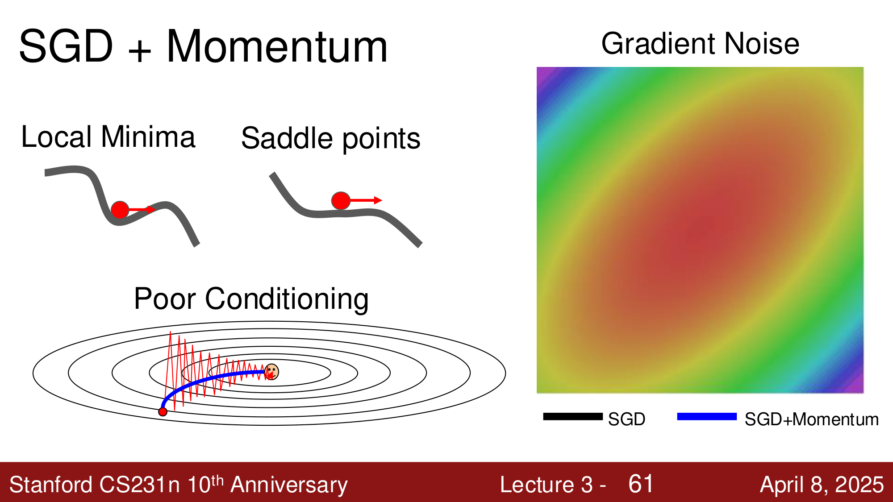
为什么有效？
- 局部极小值 / 鞍点：即使梯度为零，速度仍然非零，可以继续前进
- 病态条件：在振荡方向上，正负梯度相互抵消；在一致方向上，速度不断累积
- 梯度噪声：速度对梯度进行了平均，减少了噪声的影响
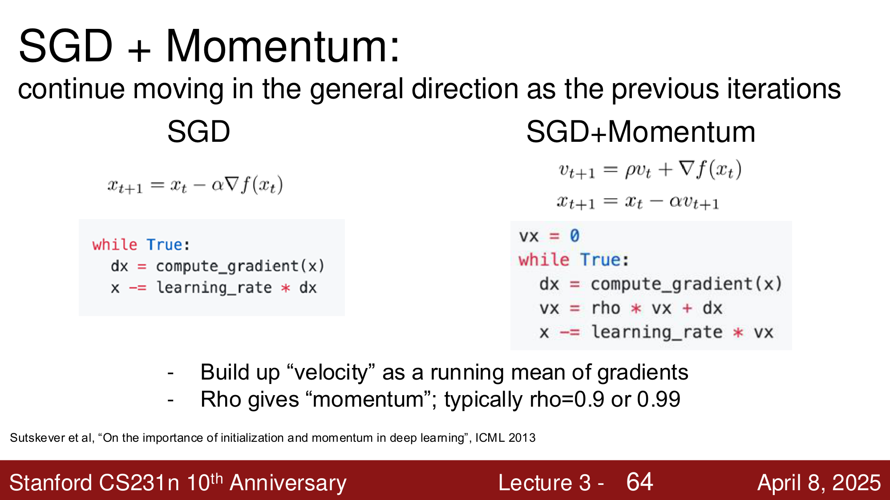
RMSProp¶
RMSProp 采用另一种思路来解决病态条件问题：为每个参数维护一个 自适应学习率 (adaptive learning rate)。
grad_squared = 0
while True:
dx = compute_gradient(x)
grad_squared = decay_rate * grad_squared + (1 - decay_rate) * dx * dx
x -= learning_rate * dx / (np.sqrt(grad_squared) + 1e-7)
- 对梯度的 平方 做指数移动平均
- 更新时除以 \(\sqrt{\text{grad\_squared}}\)：梯度大的维度步长变小，梯度小的维度步长变大
效果：在陡峭方向上减速，在平坦方向上加速，从而更快地到达最优解。
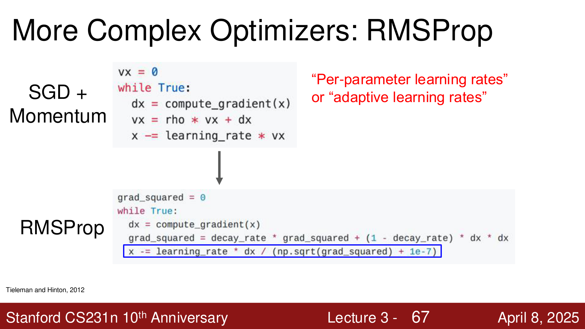
Adam¶
Adam (Adaptive Moment Estimation) 结合了 Momentum 和 RMSProp 的优点，是目前最常用的优化器之一。
Adam 维护两个指数移动平均：
- 一阶矩 (First Moment)：梯度的均值（类似 Momentum）
- 二阶矩 (Second Moment)：梯度平方的均值（类似 RMSProp）
并加入 偏差校正 (Bias Correction)，修正初始阶段因矩估计从零开始导致的偏差。
first_moment = 0
second_moment = 0
for t in range(1, num_iterations):
dx = compute_gradient(x)
first_moment = beta1 * first_moment + (1 - beta1) * dx # Momentum
second_moment = beta2 * second_moment + (1 - beta2) * dx * dx # RMSProp
first_unbias = first_moment / (1 - beta1 ** t) # Bias correction
second_unbias = second_moment / (1 - beta2 ** t) # Bias correction
x -= learning_rate * first_unbias / (np.sqrt(second_unbias) + 1e-7)
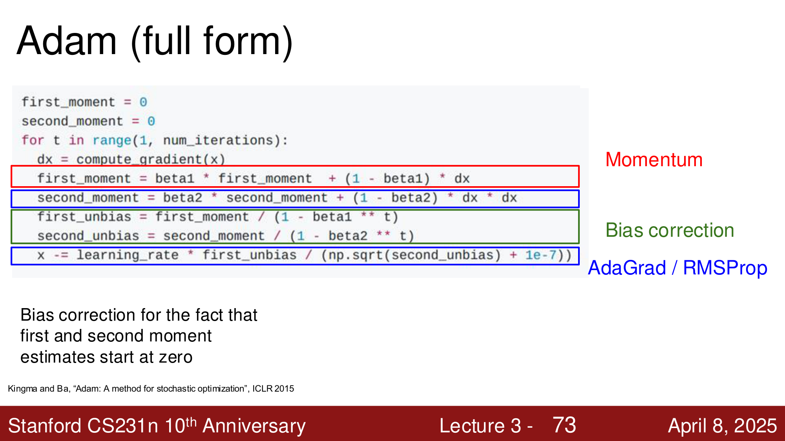
推荐的默认参数：
- \(\beta_1 = 0.9\)
- \(\beta_2 = 0.999\)
- learning_rate = \(1 \times 10^{-3}\) 或 \(5 \times 10^{-4}\)
这是许多模型的良好起点。
优化器对比可视化¶
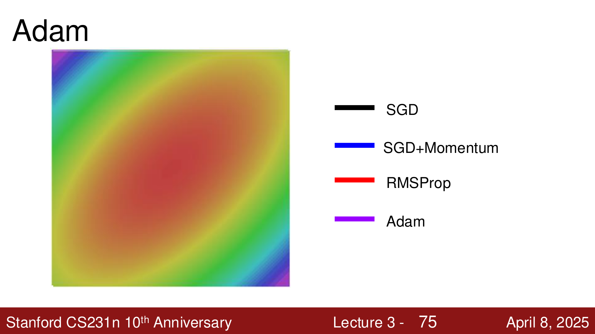
AdamW：带权重衰减的 Adam¶
正则化与优化器的交互方式很重要。标准 Adam 在 计算梯度时 就包含了 L2 正则化项，这意味着正则化梯度也会参与一阶矩和二阶矩的计算。
AdamW 将权重衰减（等价于 L2 正则化）从梯度计算中 分离 出来，直接在参数更新步骤中施加：
- 标准 Adam：在
compute_gradient(x)中计算 L2，用于动量计算 - AdamW：在最终更新
x -= ...后额外添加x -= wd * x
实验表明，AdamW 通常比标准 Adam + L2 正则化表现更好。
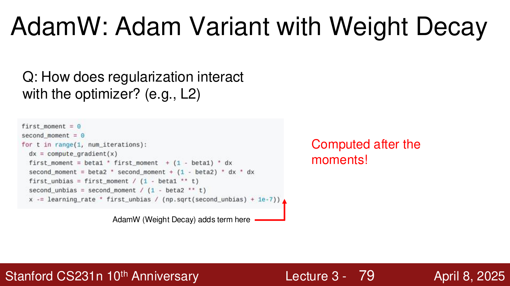
学习率调度 (Learning Rate Schedules)¶
学习率是所有优化器最重要的超参数。过大的学习率会导致损失爆炸，过小的学习率会收敛缓慢。
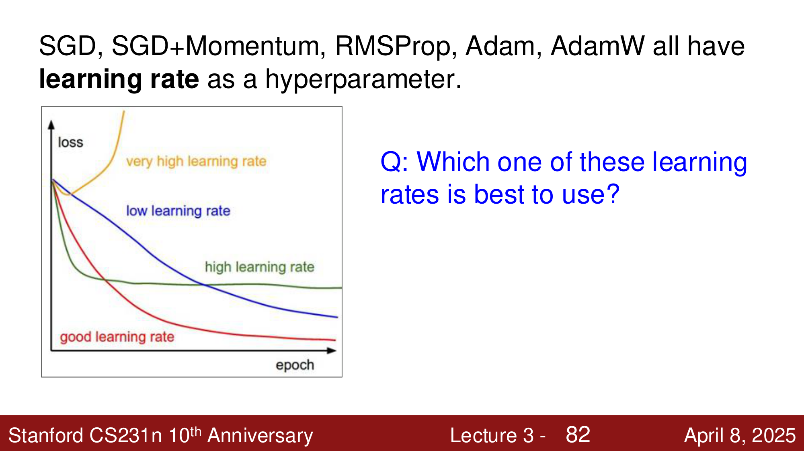
实践中，通常不使用固定学习率，而是让学习率随训练过程 逐渐减小。
常见的学习率衰减策略¶
Step Decay：在固定的 epoch 节点降低学习率。例如 ResNet 在 epoch 30、60、90 时将学习率乘以 0.1。
Cosine Decay：
其中 \(\alpha_0\) 是初始学习率，\(t\) 是当前 epoch，\(T\) 是总 epoch 数。
Linear Decay：
Inverse Square Root Decay：
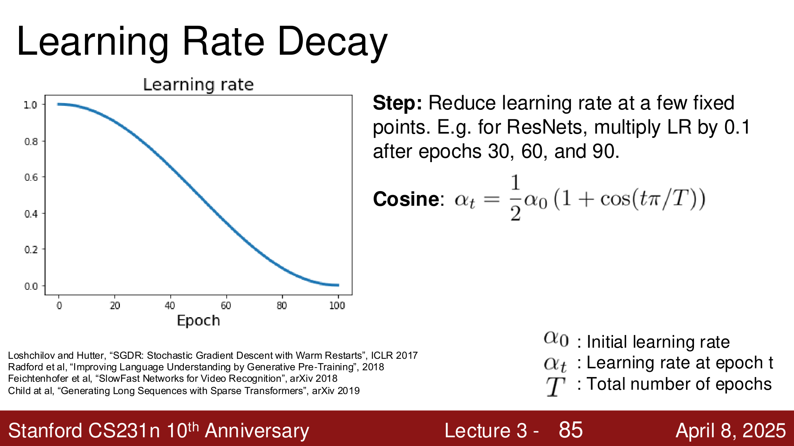
学习率预热 (Linear Warmup)¶
高初始学习率可能导致训练初期损失爆炸。线性预热 在训练前 \(\sim 5000\) 步内将学习率从 0 线性增加到目标值，之后再开始衰减。
经验法则：如果将 batch size 增大 \(N\) 倍，初始学习率也应相应增大 \(N\) 倍。
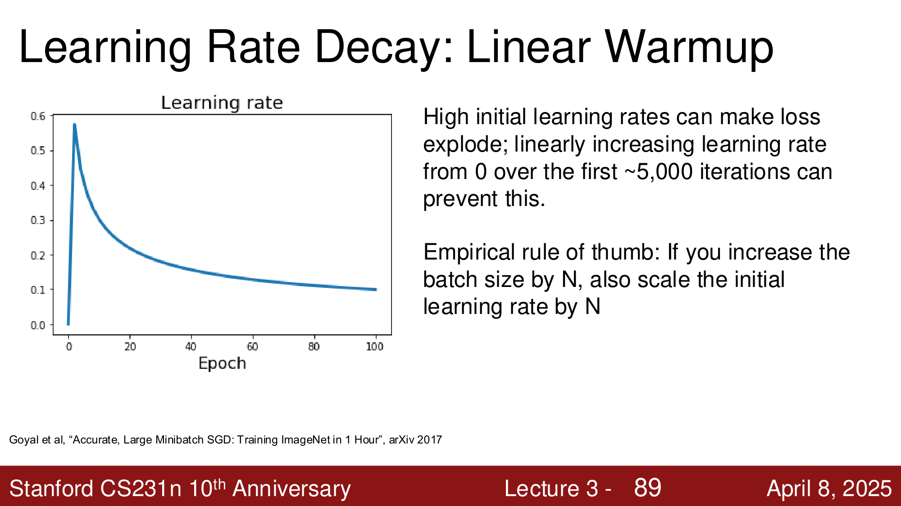
一阶优化 vs 二阶优化¶
我们讨论的所有优化器（SGD、Momentum、Adam 等）都是 一阶方法 (First-Order)：只使用梯度（一阶导数）来构建线性近似，然后沿下降方向走一步。
二阶方法 (Second-Order) 使用梯度 和 Hessian 矩阵（二阶导数）来构建 二次近似，直接跳到近似函数的极小值点：
优点是不需要选择学习率，收敛更快。但 Hessian 矩阵有 \(O(N^2)\) 个元素，求逆需要 \(O(N^3)\) 的计算量——当 \(N\) 为几千万甚至上亿参数时，这是不可行的。
近似方法（如 L-BFGS）在全批量小模型中效果很好，但在大规模随机优化中效果不佳。
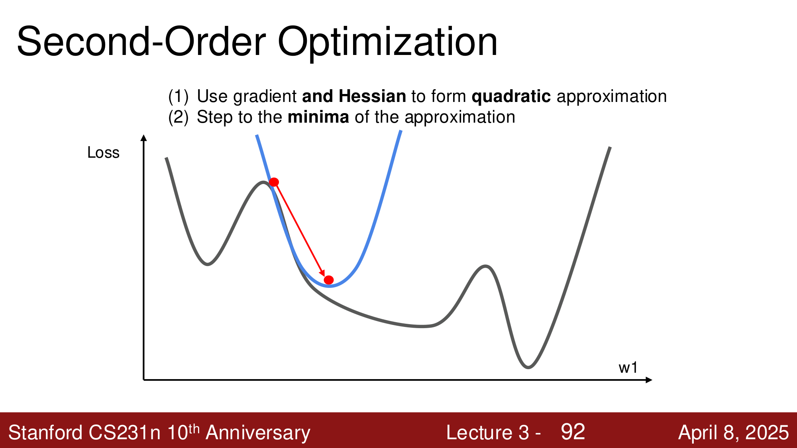
实践建议¶
- Adam(W) 是大多数情况下的良好默认选择，即使使用常数学习率也能工作
- SGD+Momentum 经过仔细调参后可能比 Adam 表现更好，但需要更多的学习率和调度调优
- 如果能承受全批量更新，可以尝试二阶方法
展望：神经网络¶
目前我们使用的是线性得分函数 \(f = Wx\)，表达能力有限。下一讲将引入 神经网络，通过叠加多个线性层和非线性激活函数来构建更强大的模型。
为什么需要非线性？¶
线性分类器无法解决某些分布问题（如同心圆分布）。但如果先对输入做一个 非线性特征变换（例如从笛卡尔坐标 \((x, y)\) 变换到极坐标 \((r, \theta)\)），原本不可分的数据就变得线性可分了。
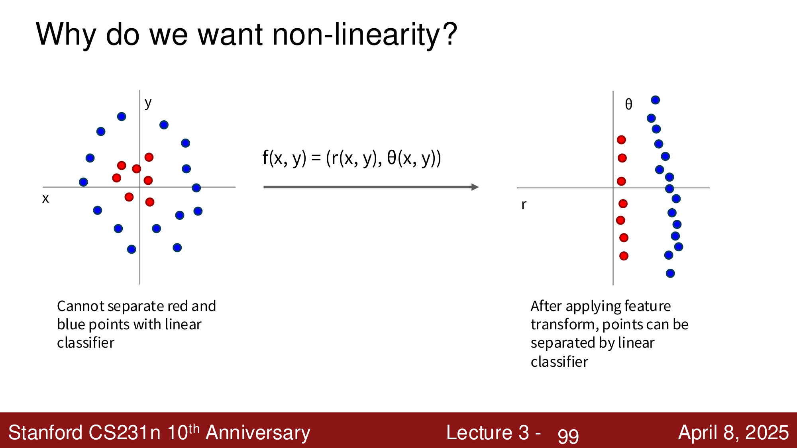
两层神经网络¶
其中 \(x \in \mathbb{R}^D\)，\(W_1 \in \mathbb{R}^{H \times D}\)，\(W_2 \in \mathbb{R}^{C \times H}\)。
\(\max(0, \cdot)\) 是 ReLU 激活函数，提供了关键的非线性。没有这个非线性，两个线性变换的组合仍然是线性的（\(W_2 W_1 x\) 等价于一个新的矩阵乘法），不会增加表达能力。
这种网络也称为 全连接网络 (Fully-Connected Network) 或 多层感知机 (MLP)。
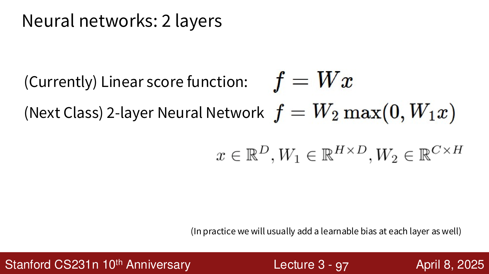
下节预告¶
- 神经网络详解
- 反向传播 (Backpropagation)：如何高效计算神经网络中的梯度